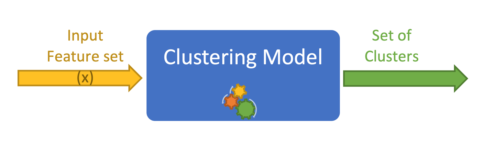

Clustering and classification algorithms
Learning outcomes:
After completing this unit you should be able to:
- build partitional and hierarchical clusters
- differentiate between K-means clustering algorithm variants and their advantages
- understand the concept of loss function optimisation in the context of clustering
- build a nearest neighbour distance based classifier
- understand the issues of overfitting and underfitting related to distance-based clustering and classification algorithms
- optimise the two different hyper parameters k and K in k-NN classification and K-means clustering respectively.
- build an ensemble of classification models and to take advantage of their consorted prediction outcome.
In this unit, we explore a set of unsupervised learning techniques and focus on clustering. These techniques allow us to investigate the inner properties of a dataset without any labels.
We are interested in the relationships of the attributes with each other, not with a dependent variable as we did with supervised learning techniques such as classification. Please make sure not to confuse clustering with classification. In clustering, we assign the data points in our set into groups. Data points in a group share a set of common properties judged by how close the attributes of these data points are to each other. More importantly there is no label that we can utilise in order to discover the groups as in classification; we just need to bootstrap/depend on the available features. As you will see in regression (unit 4), we do not need to use the input space directly, we can map the input space into a feature space and we work from there. Below we show a schematic illustration of clustering.

In classification, someone is telling us what the labels are supposed to be for each data point, while in clustering the model needs to figure this out by itself. In that sense unsupervised learning is more difficult than supervised learning. However, clustering is the easiest unsupervised learning technique that we will cover in this module. It is widely used in data mining in order to find intrinsic relationships between data points.
For example, social media is increasingly utilising this technique in order to group accounts (people) into clusters based on their interests. Three examples are:
-
if someone is interested in sport, then the group of sport-inclined people can be made subject to intensive advertisement campaigns of sporty products
-
finding the political inclination of a person and utilising this in election campaigns
-
monitoring or surveillance of dubious behaviour or accounts.
Later on, we will see an example of using clustering to aid in detecting anomalies in a user or transaction behaviour. Also clustering can aid supervised learning techniques. For example, we will see in Unit 4 that fixed basis function can provide a good way to extend the capabilities of linear models to do classification or regression. One way to specify the basis is to utilise cluster centres to provide a set of bases in order to be fed into linear or non-linear models for classification or regression; this is one way in which a technique called Radial Basis Function Networks can be built.
Because there are no labels (or even if there are labels, we do not use them for clustering, rather for evaluation of clustering as we shall see later), we will not be able to drive the clustering process by comparing the model answers against a referential answer as in classification and hence our objective function is going to be solely dependent on inner properties of the dataset such as the distances between the objects of the dataset.
In order to be able to discover those inner properties, we have to find ways to group the data points via their features. One obvious way to do that is by measuring how close the features are to each other, or measuring how close or similar the data points are to each other by inspecting how similar their features are. This brings us to the idea of metrics to measure similarity or dissimilarity between features. And to aggregate these measures over the features of a data point then use this as our metric. We can measure the similarity or dissimilarity of two data points, then by measuring the distance between all pairs of data points we can start to establish the groups. One way to establish the groups is by creating a virtual centre for each group and then we shift these centres iteratively until we settle into a pre-specified number of groups.
Later on, we can try varying the number of clusters (groups) and see if that helps us to discover more refined groups within the groups themselves. This in turn can be done in several ways: partitional, hierarchical or density-based – we will talk about the first two. So we also need criteria to tell us whether a specific grouping is better or worse than another grouping. We can do that via familiar metrics such as the sum of squared errors. But for now, let us start with a very simple case and then we can develop our understanding by increasing the complexity.